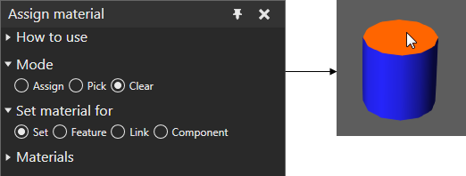

Clearing Material
You can clear the material assigned to an object in the 3D world. After you clear the material, the object would inherit a material from either another feature, link or component.
- On the Modeling tab, in the Geometry group, click the Tools arrow, and then under Material, click Assign.
- In the Assign material task pane, do all of the following:
- Expand Mode, and then select Clear.
- Expand Set material for, and then select a type of object.
- In the 3D world, click an object to clear its material.
Example. Clear blue material from face
